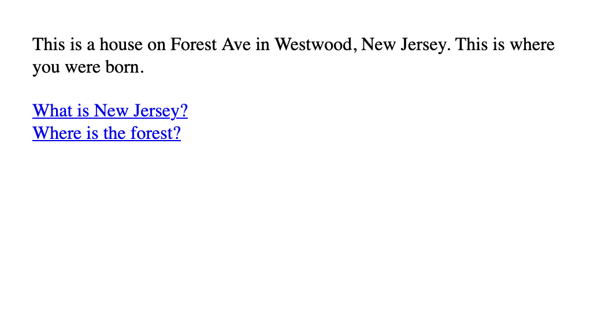

home
narrative design
Behind and around your house is the forest. In front of your house is Forest Ave.
This Tinychoice game was made at Wonderville for their 2-Hour Game Jam.
links
play in-browser
